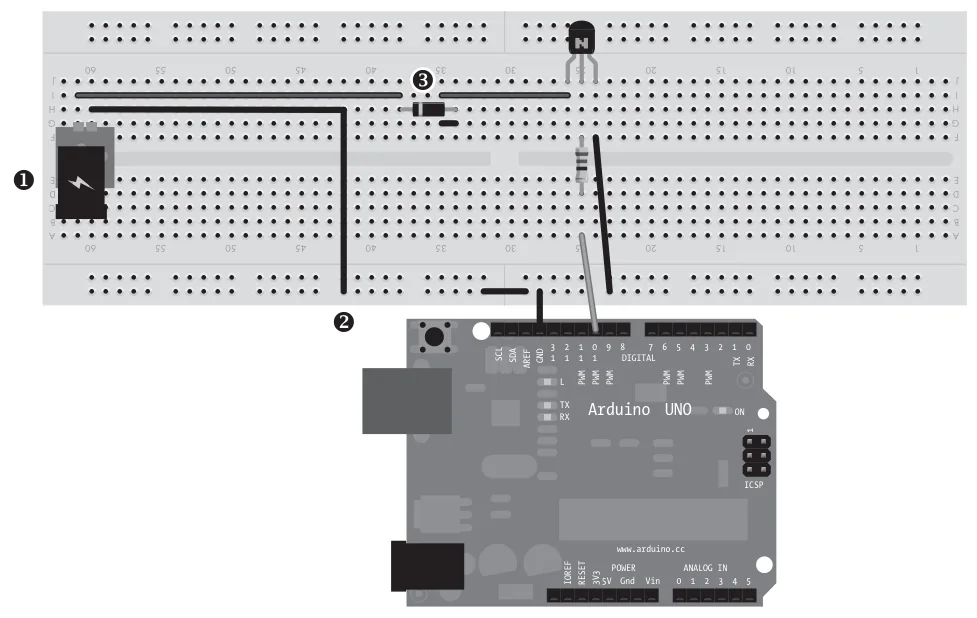

Now that you understand a bit about the transistor, rectifier diode, and relay, let’s use them together to control higher currents and voltages. Connecting the components is very simple, as shown in Figure 3-19.

This simple example circuit controls a relay that has a 12 V coil. One use for this circuit would be to control a lamp or cooling fan connected to the relay switching contacts. The Arduino’s digital pin 10 is connected to the transistor’s base via a 1 kΩ resistor. The transistor controls the current through the relay’s coil by switching it on and off. Remember that the pins are C, B, and then E when looking at the flat surface of the transistor. The object on the left of the breadboard at ❶ represents a 12 V power supply for the relay coil. The negative or ground at ❷ from the 12 V supply, the transistor’s emitter pin, and Arduino GND are all connected together. Finally, a 1N4004 rectifier diode is connected across the relay’s coil at ❸, with the cathode on the positive supply side. You can check the relay’s data sheet to determine the pins for the contacts and to connect the controlled item appropriately.
The diode is in place to protect the circuit. When the relay coil changes from on to off, stray current remains briefly in the coil and becomes a high-voltage spike that has to go somewhere. The diode allows the stray current to loop around through the coil until it is dissipated as a tiny amount of heat. It prevents the turn-off spike from damaging the transistor or Arduino pin.